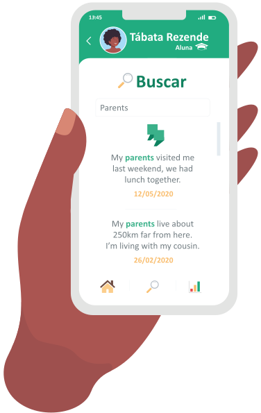
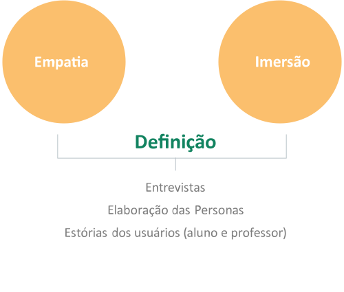
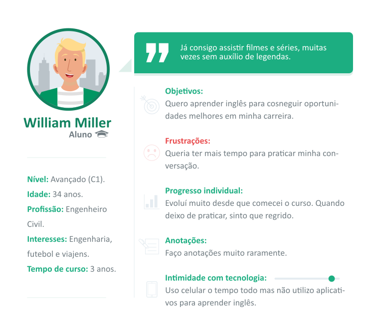
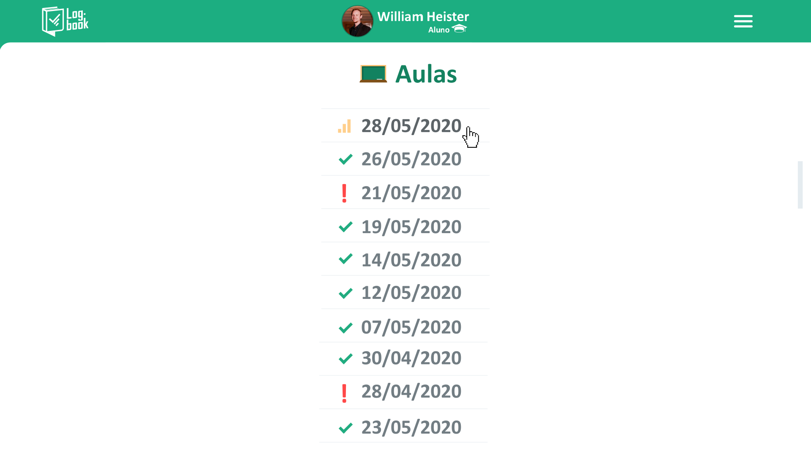
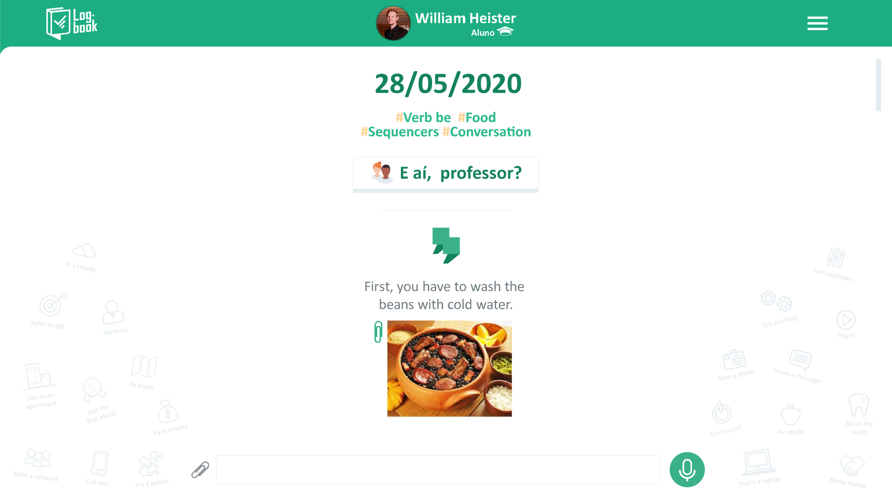
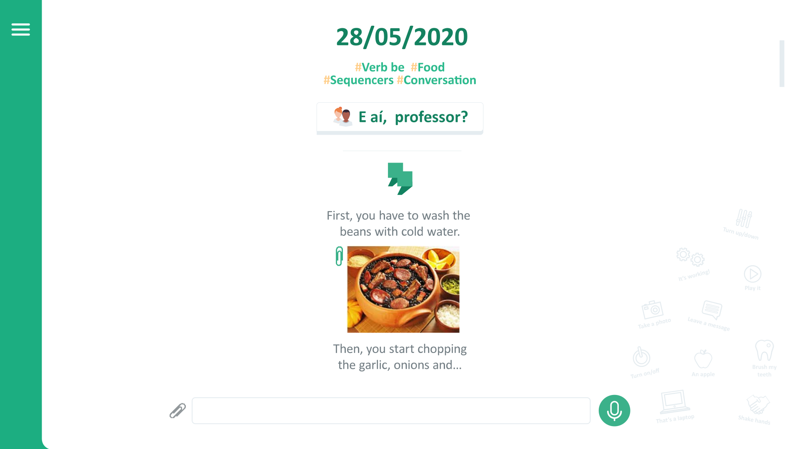
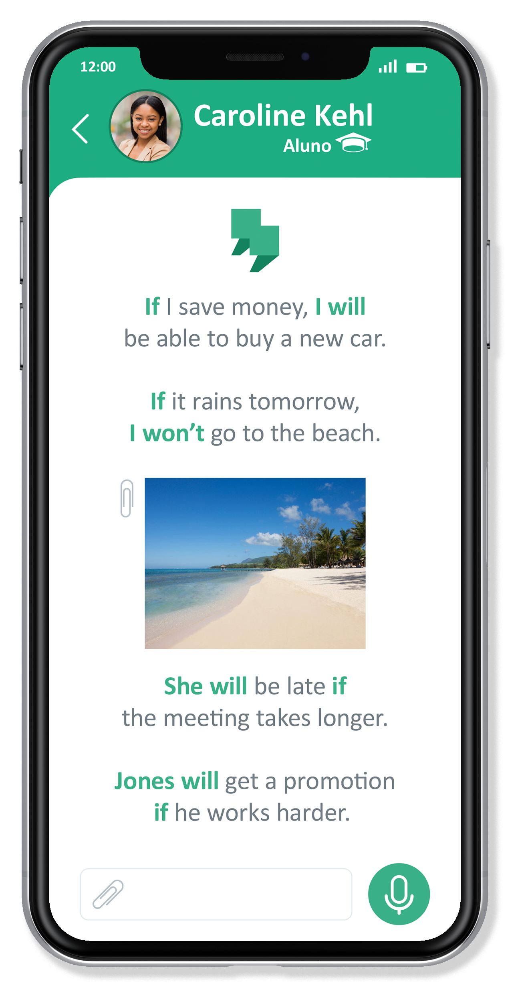
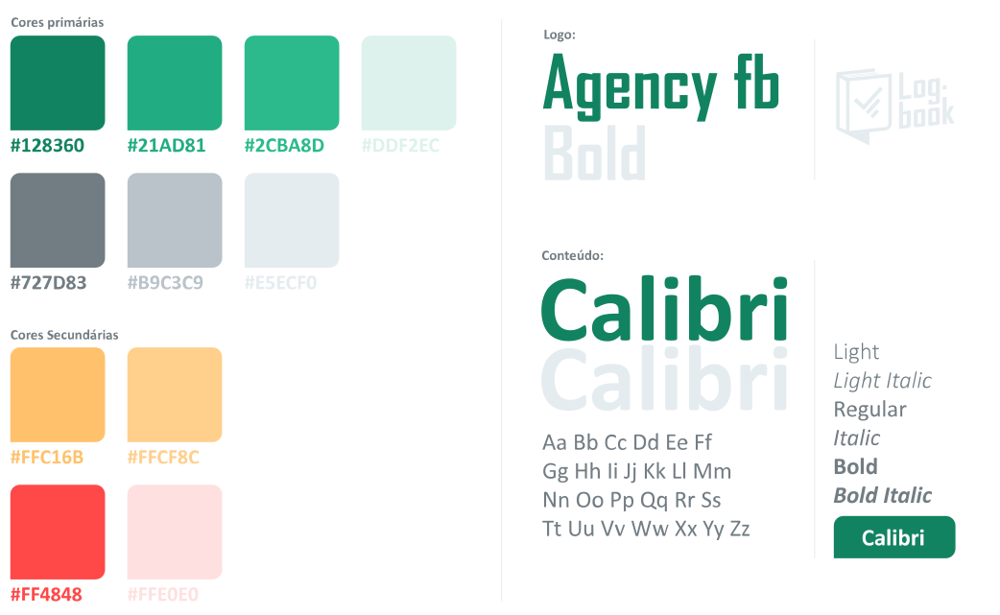

Log-book é uma ferramenta criada para professores e a alunos particulares de inglês para registro de atividades e avaliação do progresso durante o curso.
Visão Geral
Log-book é uma ferramenta criada para professores e a alunos particulares de inglês
para registro de atividades e avaliação do progresso durante o curso.
Problema
Aulas de inglês podem ser frustrantes, em muitos casos pela falta da percepção do
progresso individual durante o curso. Alunos carecem de uma ferramenta digital
que torne a produção em aula e a avaliação de suas habilidades mais acessíveis.
Solução
Alunos e professores irão usar o Log-book como uma ferramenta para registro das
atividades dentro de sala de aula, desde sentenças produzidas pelos estudantes até
a introdução de novos vocabulários. O professor pode ter a produção em aula como
base para mensurar o progresso do aluno e assim entregar uma avaliação mais precisa
ao fim de cada ciclo.
Usuários
Esta ferramenta é destinada a alunos e professores particulares de inglês.
É destinado a estudantes interessados em otimizarem seu aprendizado dentro de sala
de aula e professores que procuram entregar avaliação mais tangível e acessível aos alunos.
Meu papel
Além de designer, sou professor de inglês, por isso estive envolvido em todo o processo,
desde a concepção da pesquisa , entrevista com os usuários (alunos e professores), ideação,
prototipação, design de interface e teste de usabilidade.

Minha abordagem
Todos os métodos e abordagens foram realizadas visando centralizar ao máximo os alunos
e professores. Aulas presenciais e online foram os cenários deste projeto e suas dores e
necessidades foram o ponto focal para a criação da melhor solução.



Análise do Serviço - Mapa da jornada do usuário
Apesar de ser a solução para o problema, o Log-book será mais um ponto de contato (touchpoint)
durante a aula de inglês, que por sua vez é a verdadeira protagonista do projeto de experiência
do usuário. O Mapa de Jornada e o Blueprint abaixo revelam como decorre uma aula de inglês regular,
sem o uso do Log-book.

Blueprint
Golden Path
Qual seria o melhor caminho a ser tomado utilizando o Log Book como ferramenta dentro de sala de aula?

Como poderíamos criar uma ferramenta interativa que auxilie na produção, revisão e avaliação nas aulas de inglês?
Análise competitiva (Benchmark)
Após uma extensa pesquisa por apps voltados à educação e produção escolar concluiu-se que a ferramenta que
mais se aproxima da resolução do problema inicial seria o amplamente usado Class-Dojo. Trata-se de um app
focado em gerenciar aulas para alunos dos anos iniciais. Simples, porém muito eficiente na criação de portfólios
e avaliações individuais.
Objetivos-chave
O princípio do Class-dojo é ” Trazer cada família para dentro de sala de aula” . O app permite o
compartilhamento de atividades do portfólio dos alunos com os pais. Os estudantes podem armazenar e
compartilhar seus trabalhos, receber feedback em tempo real e aprender por meio de sua própria produção
em sala de aula.
Avaliação Geral
O app possui excelente avaliação na Apple Store (1,475,967 reviews – 4.8 estrelas) e na Google Play
(231,629 pessoas– 4.8 estrelas). Eles também possuem um canal no Youtube com pouco menos de 100.000
inscritos para guiar os usuários pelo aplicativo.
Funções Entregues
É o aplicativo é usado em salas de aula de mais de 180 países em todo o mundo, foi traduzido para 35 línguas
e é, de longe, o aplicativo mais popular para gerenciamento de classes. Entre as funcionalidades que ao app
promete entregar estão:
- Gerenciamento de classe.
- Avaliação personalizada.
- Criação de portfolios.
- Integração com os pais.
- Atividades lúdicas.
Panorama Geral
- 1 em 6 famílias Norte americanas com uma criança a baixo de 14 usam o CLass-dojo todos os dias.
- App gratuito - depende de propaganda e marketing para conseguir lucro.
- O app está expandindo e ganhando notoriedade entre investidores.
Análise SWOT
Segundo Muhammed Chaudhry, CEO da Silicon Valley Education Foundation Class-dojo
“É o mais usado e respeitado aplicativo de gerenciamento de comportamento no mercado”
Pontos fortes
- Já está presente em 95% das escolas nos EUA.
- Traduzido para mais de 30 línguas.
- É intuitivo.
- Design de interface amigável e lúdico.
- É grátis.
Pontos fracos
- Promovem um certo grau de competitividade entre crianças e entre pais.
- Não está disponível em português.
- Avaliação não é baseada em protocolos de educação.
Oportunidades
- Incorporar algumas funções do DOJO para a realidade das aulas particulares.
- Focar no ensino de inglês.
- Público-alvo: adolescentes e adultos.
- Avaliação baseada no CEFR – Common European Framework.
Ameaças
- Há muitos apps de gerenciamento de classe no mercado;
- Alguns alunos adultos podem não estar confortáveis com o uso de gadgets em sala de aula;
Análise UX
Usabilidade
- Landing Page dá boas vindas calorosas e mostra ao usuário de maneira suscinta e lúdica do que se trata a ferramenta. (Call to action)
- Funções do painel de controle variam para pais, professores, alunos e líderes escolares.
- Layout intuitivo.
Layout
- As cores amarelo, azul, verde e roxo possuem tonalidade clara e bom contraste. Transmitem tranquilidade e compõem uma atmosfera atrativa para crianças.
- O app traz diversos “monstrinhos” simpáticos que podem ser usados pelos alunos como seus avatares.
- Fontes sem serifa.
- Informações são dispostas de maneira simples e hierarquizadas.
Estrutura de Navegação
Desktop
- O espaço usado para a criação de aulas e gerenciamento de turmas ocupa cerca de 80% da tela do painel de controle.
- Barra superior possui o logo à esquerda e configurações do perfil à esquerda.
- Funções complementares podem ser acessadas pela barra esquerda.
Mobile
- Tela inicial em cascata com as principais funções.
- Painel de controle das aulas bem amplo com funções na parte inferior do celular.
- Compatibildiade com IOS/ ANDROID.
Conhecendo os usuários

Conduzi entrevistas semiestruturadas com todos os meus alunos e colegas de trabalho na
instituição de ensino que atuo. De acordo com a análise do serviço previamente realizada
na etapa de observação, pude distinguir quais são as principais diferenças entre as atitudes
observadas e o que os usuários externalizam em suas falas.
Objetivos da entrevista
- Objetivos: O que o aluno e o professor pretendem alcançar com as aulas de inglês?
- Dores: Quais são os principais barreiras no aprendizado e ensino?
- Progresso individual: O aluno consegue perceber sua evolução?
- Registro: Como o aluno registra o que é passado na aula?
- Intimidade com tecnologia: Costuma usar outros apps para produção em sala de aula?
Descobertas
- Objetivos:
A maioria dos alunos tem o aprendizado de inglês como um objetivo a longo prazo com finalidades
variadas como: progresso na carreira, busca por melhores vagas, oportunidades de negócio, preparação para um curso
pós-graduação e realizações de tarefas profissionais do dia-a-dia.
Boa parte dos alunos, principalmente na faixa etária entre 12 a 19 anos, não tem como prioridade o aspecto profissional,
são influenciados muitas vezes por seus responsáveis e em geral procuram o curso com o objetivo de se preparar para
futuras viagens, progredir individualmente e melhorar suas notas na escola.
Professores tem, no geral, um objetivo em comum: querem que o aluno progrida. A progressão varia muito de pessoa
para pessoa, existem alunos que aprendem novos vocabulários, estruturas e regras de gramática e conseguem praticar
com muita facilidade, porém, isso não se aplica a todos. Muitos alunos levam meses para fixar conteúdos e tem extrema
dificuldade em praticar o que aprendem. Contudo, o que se almeja alcançar aqui é a progressão individual.
- Dores:
Fixar o conteúdo e falar em inglês foram as principais dificuldades relatadas durante as entrevistas. Sob
a perspectiva do aluno pode-se dizer que a principal frustração é o momento em que a palavra não vem a sua mente
para formular a melhor sentença. A falta de vocabulário ou a falta de prática faz com que o aluno se sinta inseguro
na hora de se comunicar com o professor.
Professores sentem-se frustrados pelo sentimento de regressão em determinadas ocasiões. Por vezes alunos
esquecem o que já foi passado em sala de aula, o professor despende tempo explicando novamente e a aula torna-se
cansativa.
A falta de dedicação por parte dos alunos também prejudica o trabalho do professor.
- Progresso individual:
Alunos percebem sua progressão a curto prazo. Durante o período inicial do curso o aluno sente-se entusiasmado
e dedica-se a aprender e levar o conteúdo para fora da sala de aula. O sentimento de “estagnação” também foi percebido
durante a entrevista, alguns alunos não percebem mais sua evolução como sentiam no começo das aulas. Após um prazo maior,
alunos mais avançados relatam que conseguem entender boa parte de filmes e músicas em inglês.
Professores percebem o progresso a curto e longo prazo, mas não tem como demonstrar. No começo dos encontros os
alunos podem ficar apreensivos ou entusiasmados, porém o progresso existe em todos os casos. Em um recorte de 2 meses de
curso, alunos com um nível de dedicação maior conseguem relembrar dos conteúdos passados e colocam em prática em sala de
aula. Em um recorte maior, o nível de percepção diminui e o aluno pode sentir-se estagnado. Um professor relatou que esse
pode ser um possível motivo pela desistência de alguns alunos.
- Registro:
10 de 15 alunos usam um caderno para anotações, no qual somente 4 organizam suas anotações e as utilizam em sala
de aula. Professores relataram que a os alunos perdem tempo tendo que recapitular certos conteúdos que eles esqueceram
no caderno. Professores usam material físico para registro de presença, planejamento das aulas e avaliação os alunos.
- Intimidade com tecnologia:
Todos os alunos e professores demonstraram intimidade com smartphones, sendo objeto de uso diário. Alguns professores
utilizam notebook para operar mídia em sala de aula, porém, nenhum usa aplicativos para gerenciamento de aulas. Um professor
utiliza o Evernote para organizar seus alunos e ex-alunos e planejar aulas. Alguns alunos já tiveram contato o Duolínguo, mas
não deram continuidade.
Personas
Com base nas entrevistas, na análise do serviço e nos 3 anos de experiência como professor particular, sintetizei
os comportamentos e perfis de alunos e professores na elaboração das Personas.



Eu, como aluno de inglês, quero uma ferramenta que mostre minha produção durante as aulas para eu poder revisar e aprender com que já fiz.
Eu, como professor de inglês, quero uma ferramenta online que possibilite o registro da produção de meus alunos nas aulas para eu poder avaliá-los e otimizar o tempo da aula.
Ideação
Task analysis (análise de tarefas) – Aluno
Procurei simplificar ao máximo o fluxo de navegação do aluno, tornando-o, em parte, um agente passivo.
Sua tarefa principal será participar da aula em andamento e registrar sua produção. Entre as subtarefas estão:
buscar uma expressão solta na ala de busca, ver seu progresso, adicionar, interagir e ver perfil do professor.

Task analysis (análise de tarefas) – Professor
O Professor terá mais controle sob as funções do app. Sua tarefa principal será iniciar uma aula, estabelecer
quais disciplinas irá abordar, comentar e corrigir o aluno quando necessário. Entre as subtarefas estão: avaliar
o aluno em suas competências e aspectos da língua, ver perfil da instituição de ensino (se houver) e lista de
colegas (se houver).

Sketches

Wireframes
Prototipo de alta fidelidade
Aluno
Professor (funções extras)
Avaliação nos parâmetros do CEFR

Versão desktop




Teste de usabilidade
Conduzi testes com 3 alunos e 2 professores que mais se encaixam no perfil das personas. Escolhi a sala
de aula como cenário, um pouco antes do início da aula. Conduzi através de um protótipo sem a estrutura
back-end .
- Primeira impressão (open-ended task):
A primeira impressão foi positiva, os usuários se depararam com sua foto na parte superior com o menu
e logo identificaram que se tratava de um app para sala de aula. Após alguns minutos explorando o app, consegui
feedbacks positivos em relação ao visual da interface, todos esboçaram satisfação.
- Tarefa principal (aluno): Entrar em uma aula em andamento e produzir algo.
Todos os alunos conseguiram chegar na lista aulas em apenas um clique, após alguns segundos analisando
o que cada ícone simbolizava, os alunos conseguiram entrar na aula em andamento simbolizada por (botar imagem).
Há apenas 2 botões dentro do painel de controle da aula, os usuários identificaram o botão de produção e logo
conseguiram entrar na ala de produção.
A estrutura visual da área de produção segue várias convenções de apps conhecidos como WhatsApp e Telegram,
por isso, várias funcionalidades como a caixa de texto, botão para gravar áudio e anexar arquivos foram facilmente
identificadas. A taxa de sucesso foi alta e a curva de aprendizado curta, precisei apenas orientar um aluno sob que
se tratava os ícones de status na lista de aulas.
- Tarefa principal (professor): Iniciar uma aula.
O professor possui maior controle sob as funções do app, por consequência sua interface torna-se mais complexa,
os professores foram designados a iniciar uma nova aula, selecionando as matérias que iram lecionar. Este processo
levou mais tempo do que o esperado, considerando que os professores precisaram de 4 cliques para chegar ao botão
“nova aula” (Alunos>aluno>aulas>nova aula).
Pensando em encurtar o processo de inicialização da aula, pensei em adicionar um botão Nova aula no painel
de controle inicial do professor, reduzindo o processo em apenas 2 cliques (Nova aula>aluno).
- Subtarefas e taxa de sucesso:
Aluno - Ver seu desempenho em progresso: Taxa de sucesso: 80%.
Aluno - Buscar por uma palavra solta na ala “buscar”: Taxa de sucesso: 100%.
Aluno - Ver o perfil do professor e adicionar um novo professor: Taxa de sucesso: 100%
Professor - Avaliar o aluno depois da aula: Taxa de sucesso: 80%.
Professor - Buscar uma palavra na aba “buscar” do aluno: Taxa de sucesso: 100%.
Professor - Adicionar um novo aluno: Taxa de sucesso: 80%.
Professor - Ver instituição de ensino que atua e colegas: Taxa de sucesso: 100%.
Descobertas e aprimoramentos
- Os usuários mostraram-se satisfeitos em relação à interface, funções foram facilmente executadas
e elementos gráficos como botões, listas e caixas de texto foram identificados sem dificuldades.
- Desvirtuando-se das regras de UI design, alunos e professores preferiram a versão com texto
centralizado na ala de produção.
- Inicialmente, existia a ideia de introduzir a função “conteúdos” no app, onde o aluno poderia
ter acesso as explicações dos conteúdos relacionados a gramática e vocabulário e assim produzir
suas próprias sentenças em cada seção. Porém, notou-se que a função seria muito robusta e extrapolaria
a ideia inicial de um app voltado para criação de portfólio de inglês.
Moodboard


Cores e fontes

Icones e ilustrações

Logo
Apresentação

O que aprendi?
Colocar o usuário no centro do processo de criação tornou meu projeto mais consistente. Aplicar o
método de Design Thinking em conjunto com meus alunos me proporcionou um sentimento de assertividade
muito maior do que em outros projetos que fiz parte. Mesmo sabendo que nada garante 100% do sucesso do
produto, o uso da abordagem centrada no humano (HCD) aumentam consideravelmente minhas chances de resolver
o problema inicial.
Obstáculos fazem parte do processo, na verdade, os empecilhos foram esperados e aceitos de bom grado
para o aprimoramento do produto. Tive que desapegar de algumas convenções as quais já estavam consolidadas
em meu processo de design, tudo para entregar um produto que fosse de encontro com as necessidades dos usuários.